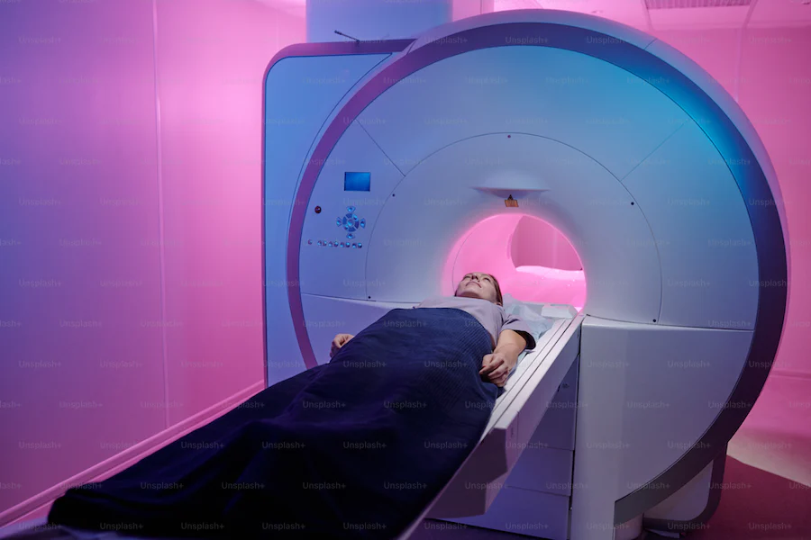
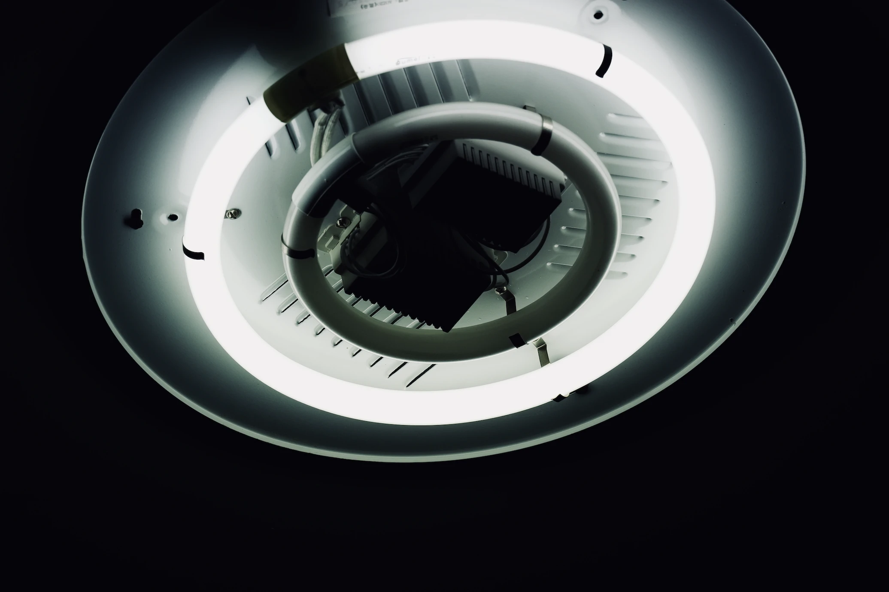
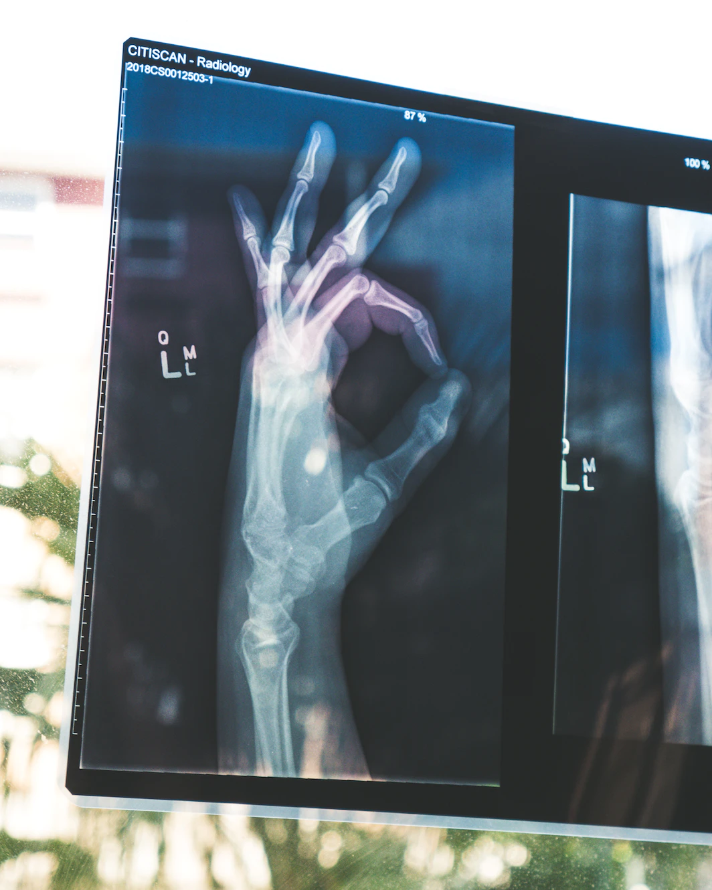

Welcome to JP Radiology
Welcome to J P Radiology, a premier radiology center nestled in the heart of Motihari, Bihar. Our state-of-the-art facility boasts cutting-edge technology, providing patients with access to world-class CT Scan machines. Committed to excellence in medical imaging, our team of skilled healthcare professionals strive to deliver accurate and timely diagnoses, ensuring the best possible care for our valued patients. At J P Radiology, we take pride in our dedication to precision and patient-centered services, making us a trusted destination for all your radiology needs in the region.
Services
- Computed Tomography Scan
- Service-2
- Service-3
- Service-4